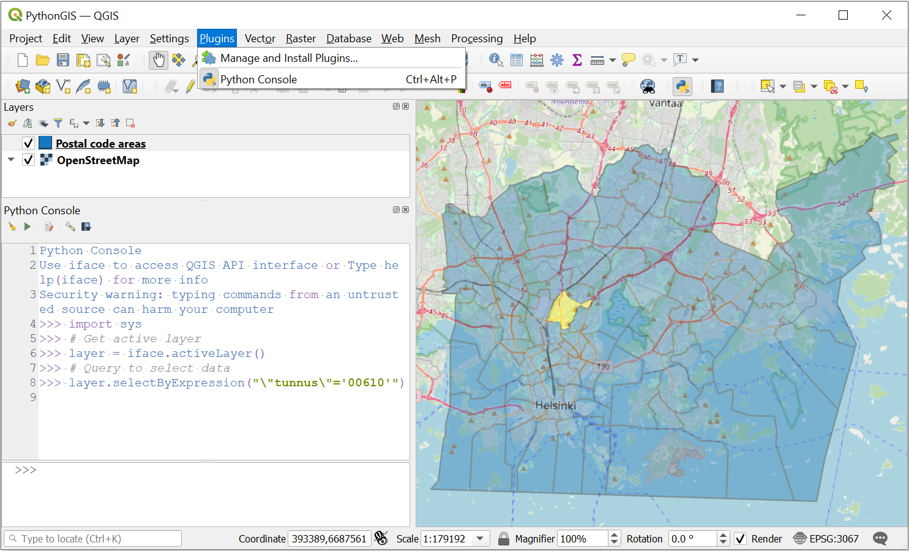

Computers and programs
Contents
Computers and programs#
We start this first chapter with a short introduction to computers and programs. If you have previous experience programming, or would prefer to jump ahead to the first section on Python programming. Otherwise, the goal here is to ensure you have a good foundation and understanding of essential general topics before introducing computer programming using the Python programming language.
Why learn to program?#
You might be wondering about why you should even bother learning to program at all. Most likely you are not a computer scientist after all, but neither are we. Yet all of the authors of this book have developed their basic computer programming skills to be able to write and use simple programs. Even very short computer programs can be very useful!
So, why bother? Well, the fields of geoscience and geography are becoming increasingly quantitative. In both fields we are now processing larger datasets, using numerical models, and performing other quantitative tasks that benefit from having some basic programming skills. Even these basic skills can allow you to do more in exploring, manipulating, and analyzing your data. For example, many Geographic Information Systems, such as QGIS, include the possibility to interact with the software and to develop new plugins using Python (Figure 1.5).

Figure 1.5. Using the Python console to interact with GIS data in the QGIS program (https://www.qgis.org/). Data sources: City of Helsinki 2022, OpenStreetMap Contributors 2022.
Programming can also be fun! Once you learn the basic syntax you may enjoy finding ways to break complex problems down into simpler pieces, developing strategies for solving programming problems, and texting your solutions. This is part of the reason that children are being introduced to programming ideas in books such as the Hello Ruby series (Liukas, 2015). Coming up with solutions with simple programs can be exiting and rewarding, and you can test your solutions right away to see whether or not your solution works!
Moreover, programming can help make us better scientists. The scientific method 1 is fundamental to how scientists conduct their research. It includes defining questions, gathering information, formulating and testing a hypothesis, analyzing experimental data, interpreting data and drawing conclusions, publishing results, and retesting. Learning basic programming skills can help us with many of these steps. Collecting data, performing experiments, and analyzing data can all be made more efficient using simple programs. For example, we will see how to take take multiple daily temperature observations and use them to calculate monthly average temperatures to investigate wamring trends in the monthly data as part of Chapter 2 in this text. In addition, we will introduce several good programming practices in the first part of this book that will help ensure our experiments and analyses are reproducible, which is a key aspect of open science 2.
Before we move into introducing programming concepts and the Python language, we will spend the remainder of this chapter with some basic terminology related to computing.
What is a computer?#

Figure 1.6. Diagram of the essential elements of a computer. Simplified from Zelle, 2017.
In its simplest form, a computer takes input from an input device such as a mouse or keyboard, processes that input using the central processing unit (CPU) and memory, and provides output to a device such as the screen. The processing that is done is by the CPU manipulates data, modifying the input prior to being output. The steps for processing could be given in a computer program, which we will define below. An essential aspect of the programs used by a computer is that they are changable, so the instructions used by the computer can be modified to alter the output that is produced. Overall, the computer allows us to take input, modify it into a new/useful form, and output it for our interpretation.
What are computers good at?#
Given the definition above, it may be clear that computers are in some ways quite simple, and as a result there are certain tasks where computers excel. Tasks computers are good at include:
well-defined tasks
data storage and manipulation
repetitive calculations
processing data or instructions
For example, given the instructions to add 2 plus 2 and return the answer in a language the computer understands, it will readily perform that calulation and return the expected value, 4.
What are computers bad at?#
Of course, while computers can be immensely powerful and perform staggering calculations, there are some kinds of problems that computers struggle with. These include:
Abstract or poorly defined tasks
Tasks requiring impossible computing power (intractable tasks)
For example, let’s consider asking the computer to calculate pi. In these terms, the computer is not likely to be successful because we have not provided clear instructions about the task. How should it do the calculation? To how many decimal places? We have given only abstract instructions that the computer cannot understand. Of course, if given clear instructions, calculating pi to 1000 digits is something the computer can easily do, as shown below.
3.1415926535 8979323846 2643383279 5028841971 6939937510 5820974944 5923078164
0628620899 8628034825 3421170679 8214808651 3282306647 0938446095 5058223172
5359408128 4811174502 8410270193 8521105559 6446229489 5493038196 4428810975
6659334461 2847564823 3786783165 2712019091 4564856692 3460348610 4543266482
1339360726 0249141273 7245870066 0631558817 4881520920 9628292540 9171536436
7892590360 0113305305 4882046652 1384146951 9415116094 3305727036 5759591953
0921861173 8193261179 3105118548 0744623799 6274956735 1885752724 8912279381
8301194912 9833673362 4406566430 8602139494 6395224737 1907021798 6094370277
0539217176 2931767523 8467481846 7669405132 0005681271 4526356082 7785771342
7577896091 7363717872 1468440901 2249534301 4654958537 1050792279 6892589235
4201995611 2129021960 8640344181 5981362977 4771309960 5187072113 4999999837
2978049951 0597317328 1609631859 5024459455 3469083026 4252230825 3344685035
2619311881 7101000313 7838752886 5875332083 8142061717 7669147303 5982534904
2875546873 1159562863 8823537875 9375195778 1857780532 1712268066 1300192787
6611195909 2164201989
But there are practical limitations as well for tasks computers can do well. If problem sizes are simply too large to calculate, the computer will be unable to complete them. The most powerful supercomputers in the world today 3 have several million processor cores and the ability to calculate more than 100,000 trillion floating point operations per second 4. Yet even those massive systems have limitiations. Imagine we have a digital elevation model of the Earth (including seafloor bathymetry) with a resolution of 1 micrometer (\(1 \times 10^{-6}\) meters). Now let’s assume we want to calculate the slope from all points in that model. The total number of surface elevation points we would have would be approximately \(5 \times 10^{26}\), and if each slope calculations requires three floating point operations, we have a total of \(1.5 \times 10^{27}\) operations. Even on one of the fastest supercomputers in the world, this calculation would take nearly 500,000 years! Of course, this is a bit of a silly example, but it is clear there are computational limits.
What is a program?#
The instructions we provide that tell the computer what to do come in the form of a program. A program is simply a detailed list of step-by-step instructions that tell the computer exactly what to do. As noted above, this program is something that can be modified and alter what the computer does when the program is executed. Software is another name for a program.
What is a programming language?#

Figure 1.7. Examples of printing “Hello, world!” in different programming languages.
A programming language is what we use to “talk” to the computer. Programming languages comprise a set of exact and unambiguous instructions that the computer understands. As such, every element of the programming language has a precise form called its syntax and an exact meaning called its semantics. Python is just one of many programming languages.